MASSAGE THERAPISTS
Experienced qualified & insured
professional therapists
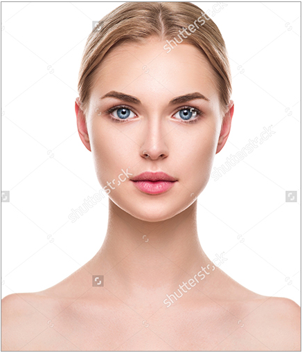
Rose
Rose immediately puts you at ease with her cheerful smile,calm approach & friendly personality.With over 3 years of experience from Latvia where she focused on both beauty and massage treatments,she is now massaging London better with us as she loves London and always enjoyed doing massages more than beauty treat from the rest of the world for a bissful,no fuss,real pampering treat from head to toe,we recommend you book a session with Rose!!
Anne
Anne loves massaging because seeing people feel better and happier after hr treatment makes her smile.Using her warm hands,Anne will give you an massage which is both relaxing and also as strong as you like.She can apply extra deep pressure with long flowing forearm strokes which really get into your muscles.Emese has lots of energy and can happily do a really long treatment at full throttle without tiring out.For those of you who love strong and active yet smooth aand graceful massage.Anne the therapist to try!
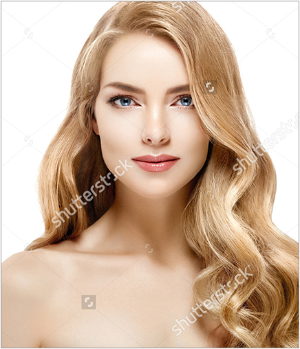
Carol
Carol has a really lovely,calm and relaxed approach which immediately makes you comfrtable.Combinning two of the most populr internaational styles into one excellent treatment,Carol,s massage is both deep and relaxing at the same time.REliable,dedicated and polite in manner,Carol serves up a truly excellent holistic masage,Herwish is to make her clients feel better ad we are confident she will achieve that with your booking!Treat yourself toa totall soothing deep tissue massage tody.
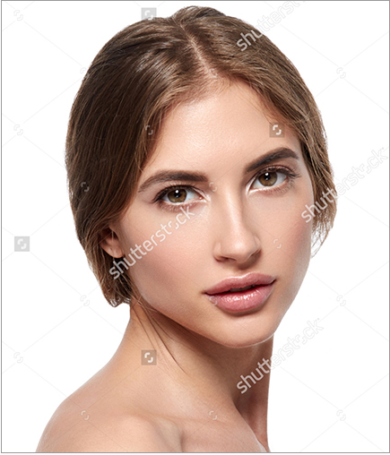
Josie
Our smiling therapist Josie has loads of experience having previously worked in a Hungarian massage spa for over 4 years. Josie has a very flowing style,starting with your feet and moving upwards. Initial softer strokes are designed to warm your muscles, and then deeper massage manipulation strokes flow expertly along your body, targeting tight spots directly for additional remedial relief. This is an excellent head to toe massage which is graceful and elegant allowing you to relax but also deep, thus easing tension, reducing stress and massaging you into better health!
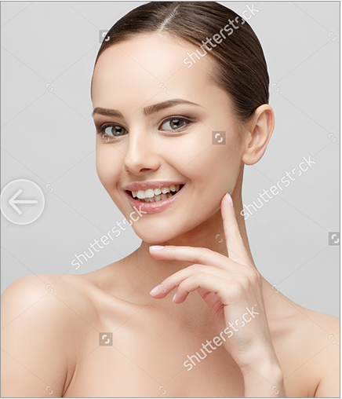
Chloe
Chloe is passionate about massage her specialist area is oil based Ayurvedic Yoga style treatments. Using a combination of oil massage techniques and yoga techniques, Chloewill balance your elements, improve circulation and release toxins. Deeply satisfying yoga and thai stretches are used to help mobilise your joints and release deep tension in your muscles. If you are brave and interested in a pure and deep massage with a real difference from the rest, this is one to try!
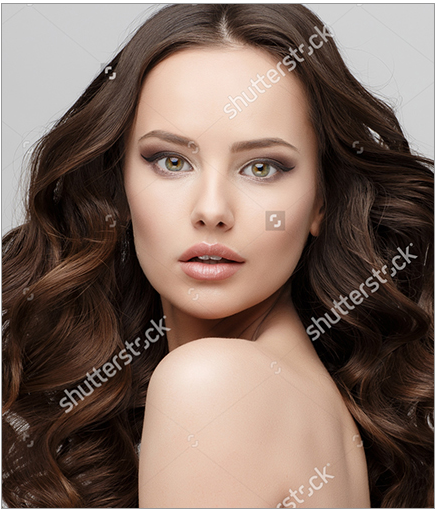
Maria
Maria loves seeing the immediate beneficial relief that deep tissue massage can bring to her clients aches and pains. In fact it was deep tissue massage which inspired Mariato become a massage therapist in the first place! She is also a firm believer that the best massages incorporate good energy and commitment and this is clear when you receive her treatment.Massage makes Maria feel better... even though she is doing the treatment... a wonderful philosophy!
Lara
A charming and friendly personality coupled with a magnificent massage from warm Hungarian hands, Lara is sure to make your aches, pains and stresses seem like they were never even there! Melinda's sessions start with warm relaxing, flowing, touches of a classic Swedish style massage and then progress, if you wish, into a more intensive, deeper tissue treatment, but retain the lovely flowing nature throughout. Lara qualified in Hungary and really loves massaging people better all around London!
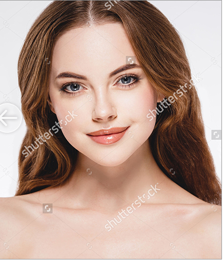
Sarah
Warm hands and a caring personality, Sarah offers an excellent deep relaxation massage combining high-end classic and deep tissue techniques with long, flowing relaxation strokes. Sarah trained at a premium Hungarian spa and qualified as a medical masseuse before bringing her amazing massage to you in London. Her lovely calm personality and enthusiasm to be reliable and organised makes her stress-busting massage all that much better.
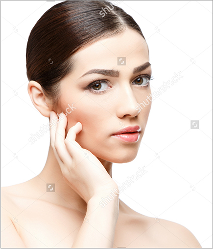
Molly
After repeatedly hearing how wonderful her massage was from friends and family in Budapest, Molly moved to London and has started as a mobile massage therapist! She offers you a truly brilliant oil-based massage, working deeper into tight muscles whenever needed. Her passion for massage, calm personality and attentive caring nature ensure you will feel comfortable throughout your treatment and make her an excellent therapist. In her spare time, Piroska enjoys travelling, hiking and sports.
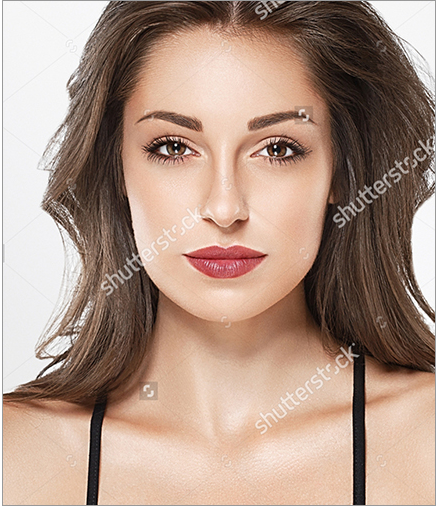
Kylie
When we asked Kylie what she would have done if she had not become a masseuse she replied “Nothing else! I love massage!”. And it shows. A dedicated, experienced massage therapist who knows what she is doing and does it with real skill, style and understanding. Confident, calm and caring Bernadett is able to massage you from strong and deep to soft and relaxing. In over four years of mobile massage therapy.
Susan
Susan has a deep passion for relaxing and rejuvenating people through her excellent massages. Her naturally warm, calm and flowing touch will unwind you into a state of bliss, or, if you wish, Susan can instead work firmer into your muscles for a more invigorating deeper session. Holistic massage is about the whole you, so enjoy her listening skills too - feel free to chat away during your session or remain totally silent if you prefer. Friendly, reliable, on time and a massage not to be missed .
Piper
Hand over to Piper, a highly skilled therapist for a magnificent health treat. She combines several techniques to create a totally captivating & unique massage. Beginning with softer strokes to prepare and warm you, Piper then utilises intense deep tissue techniques to squeeze out and release toxins thus reviving your muscles. She continuously adjusts her massage to adapt to your body’s signals. To top it all off, Piper has a really lovely personality and creates a feeling of total calm from the start. Highly recommended if you want a deep and wonderful massage.
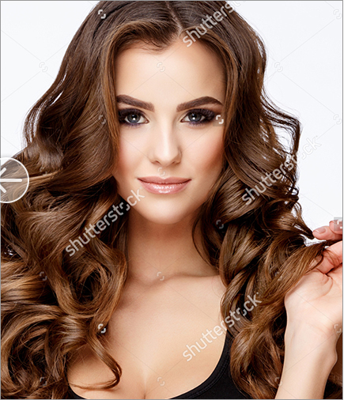
Lisa
Lisa warms your body with rhythmic, gradual, presses and applies fine oils to provide you with a luxurious, deep, holistic treatment personalised for you. You will enjoy warm, focused and confident touches starting from your legs and flowing naturally onto your other muscles throughout the massage. This technique achieves an excellent all-over body massage which deeply works and relaxes each muscle group individually whilst being seamless and smooth in nature. Treat yourself to a truly excellent mobile treatment and true bliss!
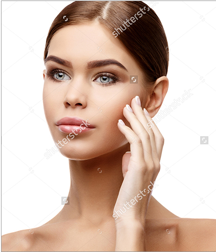
Kate
Confident, experienced and cmiley! Kate qualified as a medical masseur in Hungary and worked in an excellent spa there. She is highly skilled and tops that off by having a true passion for massage. From relaxing to deeper deep and passive stretching, Kate is sure to have a style that will work wonders for you. Lie back and hand over total control for the ultimate in home visit massage.
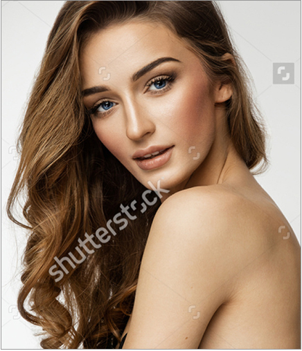
Alice
Highly skilled in a wide range of styles, your massage with Alice will commence with her calming nature and warming touch before progressing into deep, thorough strokes which flow expertly up and down your body. Prepare yourself for an intense feeling of tranquility and relaxation whilst also enjoying a really deep massage into each muscle group. Deep & relaxing to the extreme! Her passion for massage, nature and skills make Alice an excellent therapist.
Sam
Sam’s expertise in massage shows as soon as she starts your treatment. Her style is flowing in nature, with circular movements effortlessly mixed with deeply relaxing presses. Sam gradually moves her massage along your body, tracing each muscle group precisely and thoroughly. You will feel a deep and instant relaxation in each of these areas before she moves on. Both her hands work closely together in harmony, interweaving and applying deeper pressure exactly where you need it most.
Tia
Tia is keen to ensure you enjoy the very best treatment she can provide, so puts her heart and full energy into every massage treatment. Whether you need deep, intense massage techniques to revive and refresh your muscles or prefer a more soothing and softer touch to relax, Tia is sure to please. Tia has a friendly and very calm personality, thus creating the perfect atmosphere for you to enjoy your massage. An excellent and very reliable therapist providing wonderful treatments!
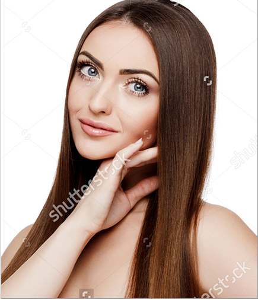
Penelope
Take a deep breath, close your eyes, let Penelepo take complete control from her first touch. Lara is one of our most experienced therapists with a wide range of styles. From soft massages which send you to sleep, to intense deep tissue massages which revive you. Penelope is also happy to combine several techniques into one session. A happy, calm and friendly Hungarian personality with bags of skill, Lara has a magical ability to take you to Massage Heaven. You are in for a treat!
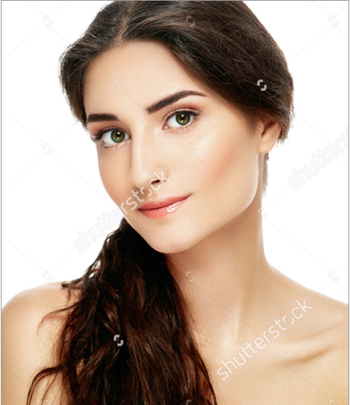
Clara
If you are looking for a really strong full-body massage, which is warm, slow and expertly delivered, then Clarais the therapist for you! Clara, who has over 5 years of experience, progresses calmly across the contours of your body, in skillful flowing strokes. Both hands work each muscle group thoroughly and slowly, applying pressure point techniques in any tight spots. A super relaxation or rejuvenation massage from an excellent and reliable therapist. Total body relaxation expertly delivered.
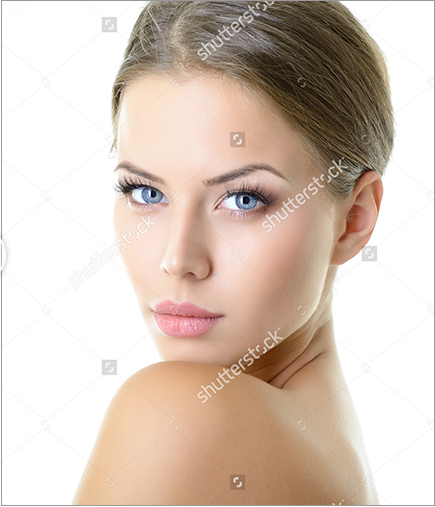
Lauren
Lauren believes no two people are the same and so a really good massage comes from feeling and reacting to the different requirements of each person and their various muscles. She has a very warm and engaging personality with a deep passion for massage. Being physiotherapy trained and with extensive experience of working in a military hospital, Lauren is very comfortable doing a really deep massage working right into your problematic areas, or if you prefer, she can of course do a softer relaxation massage melting away mental stresses.
Mobile massages
@2017 MOBILE MASSAGES
TERMS & CONDITIONS
PRIVACY POLICY